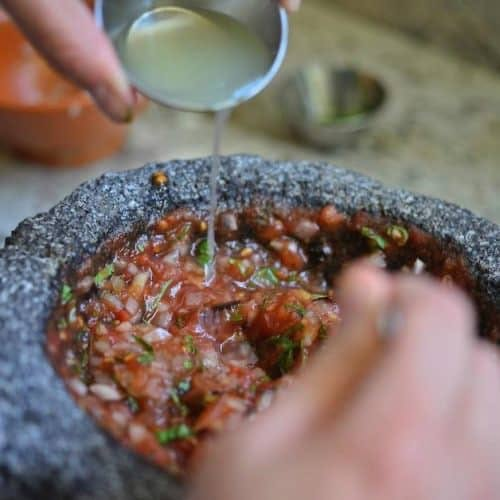

Chirmol Guatemalteco
Chirmol is a Central American salsa made with fresh ingredients that originated in the Mesoamerican region with deep roots in Guatemala and southeastern Mexico. It's a pre-hispanic condiment that has historical ties to Mayan culture. Chirmol has deep smokey flavors from the roasted and charred vegetables that set it apart from similar hispanic condiments. This recipe specifically comes from my own mother and is best enjoyed over fresh carne asada tacos.
Ingredients
- 4 Large tomatoes, chopped or crushed
- Half a white onion, chopped
- 2 Limes.
- 1 Jalapeños, chopped or crushed
- Half a cup hot water
- 1 Bunch of cilantro, chopped
- 3 Leaves of fresh mint, chopped
- Salt to taste
- Optional, black pepper to taste
Steps
- Thoroughly wash and dry all of your ingredients
- Char off your tomatos and jalapeños on high heat over an open flame or a dry skillet until dark brown.
- While your tomatoes and jalapeños char, roughly chop your onion, cilantro, and mint.
- After your ingredients have finished charring to a nice deep brown, without peeling, roughly chop them or optionally crush them in a molcajete.
- Combine everything in a bowl and mix.
- Add the juice of 2 freshly squeezed limes and half a cup of hot water to the bowl.
- Season with salt and optionally pepper to taste.
- Enjoy.
- (All ingredients can be adjusted to taste and personal preference, don't be afraid to make it your own!)